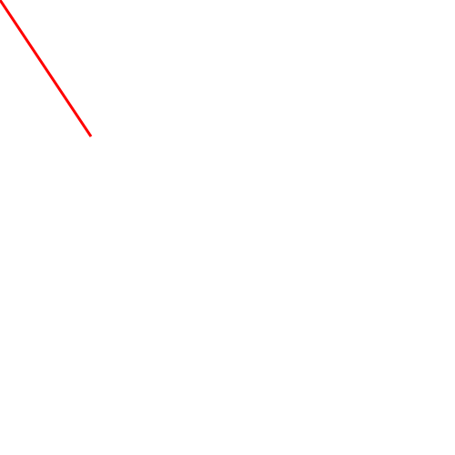

SVG is for describe two-dimensional based vector graphics
To create a line

To create a Circle
Sorry , your browser does not support inline SVG
Sorry , your browser does not support inline SVG
To create a Rectangle
Sorry , your browser does not support inline SVG
To create a circle with the rx ry of the Rectangle
Sorry , your browser does not support inline SVG